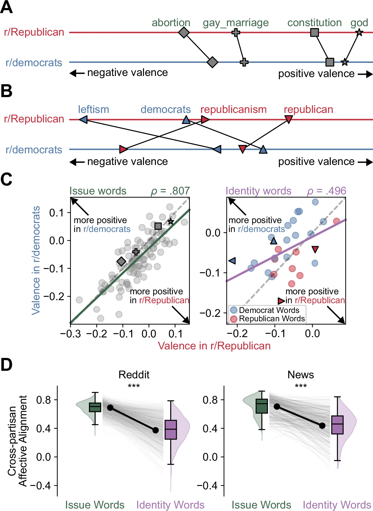
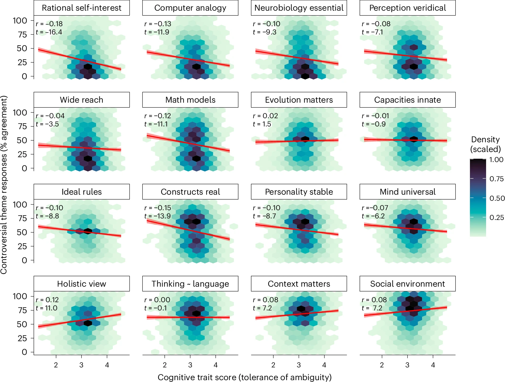

I am a Ph.D. Candidate at the Department of Psychology at the University of Chicago.
My primary advisors are Marc G. Berman and Yuan Chang Leong, and I collaborate with Wilma A. Bainbridge and James A. Evans.
I study why some (social) information is processed more than others. This prioritization sometimes diverges across groups, such as political partisans seeing the world differently, and is sometimes shared across people, such as some faces being more remembered than others. To study these questions, I primarily use computational methods combined with behavioral and neuroimaging experiments.
Selected publications for each research interest are shown below. For a complete list, please see my Google Scholar profile .
Why do different groups of people (e.g., political partisans) process the same information differently?

2026
Communications Psychology, 4(1), 65.
We analyzed ~300 million Reddit comments and ~7 million news articles from partisan sources and found that partisan language is less affectively divided over political issues than over identity labels, suggesting meaningful affective alignment despite partisan animosity.

2025
Nature Human Behaviour, 9, 1147–1161.
Scientific disagreements are not just a matter of using different methods or having conflicting data: we surveyed 7,973 researchers in psychological sciences and found that disagreements are also associated with what they research and with their cognitive traits.
Why is some information (e.g., faces, scenes) consistently more memorable than others, across different people?
In Preparation
2025
PsyArXiv
Across three behavioral experiments and a computational analysis of 108,754 scene images, we found that natural scenes contain less noticeable information than human-made scenes, making them more compressible, and that they are less memorable.